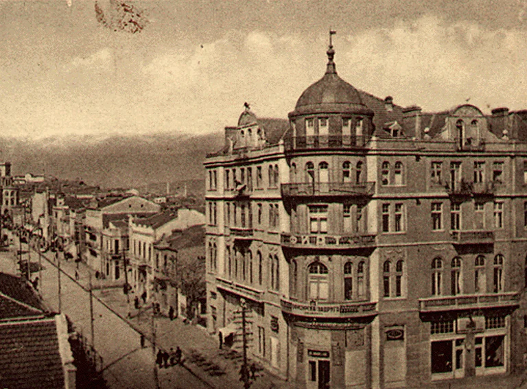

Zelena tržnica
- Produkcija
- UFUŽ i Dokumentarni film Prag
- Scenarij i režija
- Slavko Janevski i EMAN CANERA
- Godina
- 1959
- Trajanje
- 00:18

Skopske kršćanske kuće - 1870. godina.

Dio stare skopske čaršije, 1902. godina. Niz dućana s kepencima ispred Kuršumli-hana. U pozadini se vidi kula Gulšen-hamama.

Glavna ulica u nastajanju (danas je to ulica „Makedonija“, koja se proteže od današnjeg Muzeja grada Skoplja prema Kamenom mostu). Na desnoj strani vidi se Katolička crkva gotičkog arhitektonskog izraza, kao i pojedine zgrade s lijeve strane. Dio kod Kamenog mosta popločen je 1911. godine kako bi prošao sultan Murat V., koji je došao posjetiti Skoplje prije odlaska na Kosovo polje.

Fotografija je snimljena sa zgrade starog željezničkog kolodvora - današnjeg Muzeja grada Skoplja, koji je izgrađen 1873. godine u doba Osmanskog Carstva. U prednjem planu je prilaz kolodvoru s ograđenim zelenim površinama. U nastavku je glavna ulica koja vodi prema trgu. Na početku ulice s lijeve strane je hotel „Rusija“.

Pogled prema glavnoj ulici „Makedonija“. Slavoluk je postavljen u čast nekog važnog gosta. Lijevo od njega je hotel „Rusija“. - početak 20. stoljeća.

Glavna ulica s hotelom „Moskva“ - 1920-ih

Glavna ulica, današnja Makedonija, koja vodi od današnjeg Muzeja grada Skoplja prema trgu. Na kraju ulice vidi se Časnički dom, a desno od njega Gospodarska trgovačka komora - 1930-ih.

Glavna ulica, snimljena prema današnjem Muzeju grada Skoplja - oko 1920. godine.

Glavna ulica (današnja Makedonija), od trga prema željezničkom kolodvoru - oko 1920. godine.

Glavna ulica, Makedonija, od današnjeg Muzeja grada Skoplja prema trgu. Lijevo je hotel Bristol, a desno se vidi Krangova palača. (1930-ih)

Glavna ulica koja vodi od današnjeg Muzeja grada Skoplja prema trgu. Snimljeno kod današnjeg hotela „Bristol“ i Krangove palače. U pozadini se vidi Časnički dom - oko 1935. godine.

Glavna ulica koja vodi od današnjeg Muzeja grada Skoplja prema trgu. Zgrada na uglu je Krangova palača - 1930-ih.

Krangova palača. - 1930-ih.

Ulica uz kej na desnoj obali Vardara. - 1930-ih

Ulica u starom dijelu grada prema staroj čaršiji - kraj 19. stoljeća.

Ulica od Kamenog mosta prema staroj čaršiji. - 1920-ih

Ulica u starom dijelu grada, prema mahali Čair. U prednjem planu su stajalište fijakera i stara turska česma. U pozadini su zgrade stare narodne arhitekture - 1920-ih.

Kameni most prema staroj čaršiji. Lijevo je niz trgovačkih dućana, a desno zgrada zubara dr. Rubena i niz trgovačkih dućana prema staroj čaršiji - oko 1935. godine.

Ulica „Kruševska“ u Pajko mahali, 1920-ih.

Ova ulica danas ne postoji. Protezala se usporedno s glavnom ulicom, od trga prema starom željezničkom kolodvoru (današnji Muzej grada Skoplja) - 1920-ih

Glavna ulica (današnja „Makedonija“) - 1920-ih.

Ulica stare čaršije u Skoplju. U pozadini Mustafa-pašina džamija. - 1930-ih

Ulica u staroj čaršiji u Skoplju. U pozadini se vidi Mustafa-pašina džamija. - 1930-ih

Ulica „Cvetan Dimov“ u naselju Čair, 1940-ih. U pozadini se vidi Mehmed-pašina džamija.

Skoplje, 1950-ih. Ulaz u staru skopsku čaršiju - lokacija robne kuće „Most“. U prednjem planu je skupina dućana, srušenih nakon potresa 1963. godine. Na lijevoj strani vidi se dio skopske tvrđave - Kale. U pozadini je Mustafa-pašina džamija.

Mali trg u staroj skopskoj čaršiji, 1950-ih.

Ulica 11. listopada, snimljena s trga prema današnjem Sobranju R. Makedonije. U pozadini se vidi stara zgrada Uprave unutarnjih poslova. - 1950-ih

Ulica 11. listopada sa Sobranjem R. Makedonije s lijeve strane. Na lijevoj strani vidi se i srednjovjekovna kula. U pozadini fotografije vidi se dio zgrade stare pošte. - kraj 1950-ih

Ulica „Goce Delčev“, snimljena s trga. U prednjem planu lijevo vidi se dio hotela „Makedonija“, koji se srušio u potresu 1963. godine. - 1950-ih

Glavna ulica prema trgu. U prednjem planu je Katolička crkva. - 1950-ih

Glavna ulica u smjeru željezničkog kolodvora (današnji Muzej grada Skoplja). S lijeve strane vidi se Katolička crkva. - 1950-ih

Glavna ulica „Makedonija“, prema trgu. - 1950-ih

Skoplje, 1950. godina. Zapadni dio glavne ulice. Na lijevoj strani je hotel „Moskva“.

U prednjem planu je raskrižje Ulice 11. listopada i bulevara Koča Racina. Desno od kule, koja je u izgradnji, vidi se stara vojna pekara iz Prvoga svjetskog rata - 1950-ih

Raskrižje bulevara Koča Racina i Ulice 11. listopada. - 1950-ih

Ulica uz Gradsku bolnicu i Radničko sveučilište - 1950-ih

Ulica 11. listopada - kraj 1970-ih, prema trgu „Makedonija“.

Pogled iz Ulice 11. listopada prema trgu „Makedonija“. S lijeve strane su stambene zgrade, a desno zgrada Elektroprivrede. - kraj 1970-ih

 Akvadukt4 razglednice
Akvadukt4 razglednice Kale30 razglednica
Kale30 razglednica Mostovi60 razglednica
Mostovi60 razglednica Kej58 razglednica
Kej58 razglednica Trg46 razglednica
Trg46 razglednica Građevine66 razglednica
Građevine66 razglednica Kršćanski hramovi19 razglednica
Kršćanski hramovi19 razglednica Muslimanske građevine33 razglednice
Muslimanske građevine33 razglednice Časnički dom29 razglednica
Časnički dom29 razglednica Kazalište28 razglednica
Kazalište28 razglednica Željeznički kolodvor13 razglednica
Željeznički kolodvor13 razglednica Škole36 razglednica
Škole36 razglednica Parkovi12 razglednica
Parkovi12 razglednica Tržnice18 razglednica
Tržnice18 razglednica Ulice38 razglednica
Ulice38 razglednica Panorama I60 razglednica
Panorama I60 razglednica Panorama II30 razglednica
Panorama II30 razglednica Kolaži55 razglednica
Kolaži55 razglednica Poplave9 razglednica
Poplave9 razglednica Potres27 razglednica
Potres27 razglednica Skoplje 2000.26 razglednica
Skoplje 2000.26 razglednica